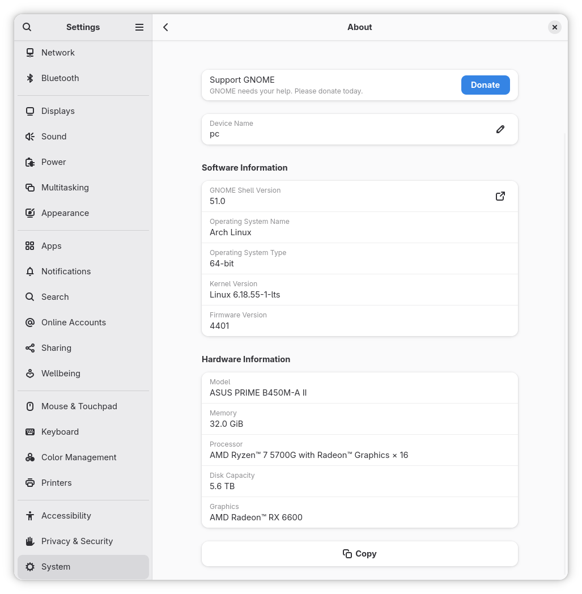

Saya balik ke GNOME. Labil ya. Umur uda kepala 3 masih labil masalah desktop. Habis dari Gnome ke XFCE -> MATE -> Gnome lagi.

Why?
Habit itu bisa dibentuk. Ngebentuk habit itu minimal 2 minggu, 1 bulan uda kerasa perubahannya. Saya udah sebulan di XFCE/MATE. Seamless, ga ada keluhan untuk habit berkomputer. Keluhannya datang dari fitur/bug.
Dari Gnome yang lebih ke keyboard-centric, ke XFCE/MATE yang lebih tradisional dan mouse-centric, perlu ngubah habit lagi. Dan karena saya kerja masih pake laptop kantor yang Windows, ga terlalu susah buat ngubah habit. Saya sukses disana. Sampai…
Not so bug free
XFCE, itu feature complete. Udah ga ada development yang signifikan. Dan kalo ketemu bug, amsyong dah. Ga ada lagi update untuk benerin bug nya, meskipun nanti saya misal submit bug. Dan saya bukan user yang aktif ya, jadi kemungkinan kecil saya bakal submit bug.
Bug yang saya temui di XFCE ada pada emulator android. Ketika pindah workspace, emulator android jadi hilang fokus. Ga bisa difokuskan lagi meski uda diklik window nya. Jadi input keyboard ga bisa masuk. Bisa diakali pake settingan “Focus follow mouse”. Anying ini lebih annoying daripada ga bisa fokus. Karena desktop nya mouse-centric, mouse lebih sering gerak. Nah kalo “Focus follow mouse”, mouse geser dikit pindah lagi fokus nya. Buset. Ini bug di xfwm nya ya.
Pindah lah ke MATE.
Just insufficient
Kurang lebih sebulan lah ya pake XFCE/MATE. Kurang tahu juga berapa lama di XFCE berapa lama di MATE. Lebih lama di MATE nya, karena saya menjumpai bug emulator itu masih di awal-awal pake XFCE, dan habis itu langsung pindah ke MATE.
MATE ini mirip Gnome2, nostalgia aja. Saya ga masalah pake window switcher (taskbar) klasik ya. Yang jadi masalah itu application launcher. Saya gerah kalo harus tekan start menu terus nyari aplikasi lewat sana. Yasudah saya bikin application launcher di panel. Saya buat panel sendiri khusus buat application launcher, saya autohide. Clunky, pek. Kadang autohide, kadang enggak. Kudu dihover bentar baru sembunyi.
Capek. Coba pake dock applet. Sumpah rusak ini dock applet di MATE. Bug tok isinya. Males saya bahasnya. Dari ga bisa langsung pin app sampe kadang ngefreeze terus hang. Kok ga pake dock aja? Pake! Saya pake plank, lebih amsyong lagi malahan. Window cycle nya busuk.
Back to GNOME
Problem awal pindah dari GNOME kan gara-gara maen game fps ga stabil. Minor stutter gitu. Setelah capek pake desktop lain, saya coba utak-atik steam nya. Ketemu settingan
DRI_PRIME=1 vblank_mode=0 LD_PRELOAD="" mangohud %command%
Stabil dong FPS nya. 🤷♂️
Emang kudu sampe pindah-pindah desktop baru nemu settingan yang pas.
Sekarang saya balik ke GNOME, no extension. Ntar mau nyoba nyalain AppIndicator and KStatusNotifierItem Support, soalnya aplikasi yang saya pake emang ga bisa kalo ga pake tray. Apa ngefek ke FPS game.